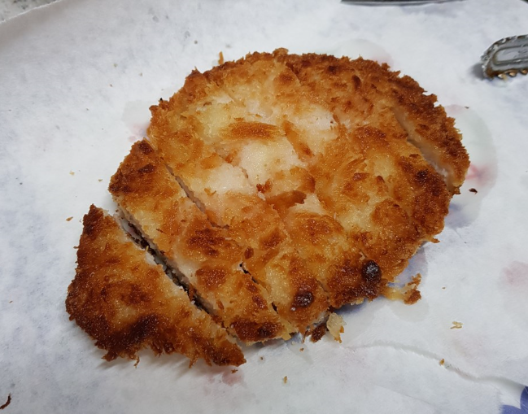

1.가츠동의 재료
2.가츠동 조리하기
3.마무리 하기
가츠동의 재료
돈가스, 계란, 볶음재료
볶음재료는 양파,쪽파,버섯등 원하는 재료로!>
멘쯔유, 물, 설탕
가츠동 조리하기
돈까스는 미리 튀겨 놓고, 일렬로 잘라놓도록 하자.
냄비에 미리 만들어둔 쯔유를 부어서 끓인 뒤에 채소를 넣고 함께 졸여준다.
끓기 시작하면 돈까스를 얹어주고
풀어준 달걀물을 냄비에 골고루 뿌려준다.
달걀물을 ⅓씩 뿌린 뒤에 젓가락으로 휘저어주면 달걀이 덩어리 지지 않고 잘 퍼지게 된다.
달걀이 반숙 정도가 되었을 때까지 익혀주자.
요리 마무리하기
적당하게 넓은 크기의 그릇에 밥을 담아주자.

그릇에 완성된 소스를 가지런히 얹어주자.
소스 위에 썬 파나 김가루등을 얹어주면 풍미가 올라갈 것이다.
가족과 함께 식사를 즐기자.